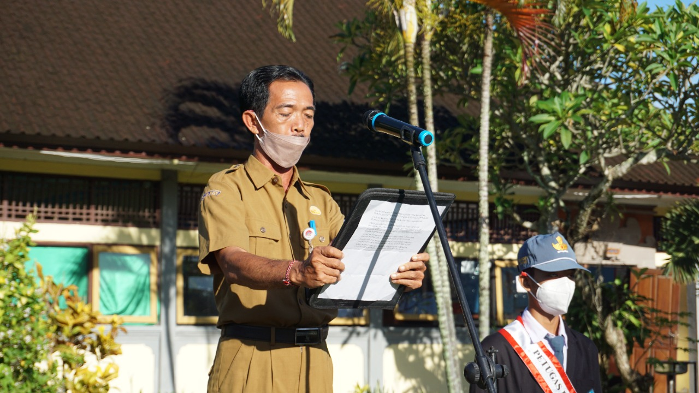

Siswa Raih Juara Lomba Tingkat Kabupaten
Ringkasan berita prestasi siswa SMA Negeri 1 Dawan.
Cerdas, Berkarakter, Berprestasi — Berlandaskan Tri Hita Karana
Di era globalisasi dan pesatnya perkembangan teknologi informasi, keberadaan sebuah website bagi sebuah lembaga pendidikan seperti SMA Negeri 1 Dawan menjadi sangat penting. Melalui media informasi berbasis website ini, sekolah berharap dapat menjalin komunikasi yang lebih dekat dengan siswa, orang tua, alumni, dan seluruh stakeholder secara luas.
Kami mengajak seluruh warga sekolah untuk terus bersemangat menimba ilmu, membangun karakter, dan mengukir prestasi, tanpa melupakan nilai-nilai kearifan lokal yang menjadi jati diri kita bersama.
SMANSADA.. PASTI BISA!!

"Cerdas, Berkarakter, Berprestasi, Berlandaskan Tri Hita Karana"
Ringkasan berita prestasi siswa SMA Negeri 1 Dawan.
Informasi jadwal dan tata tertib pelaksanaan.
Pendaftaran dan jadwal kegiatan dibuka.